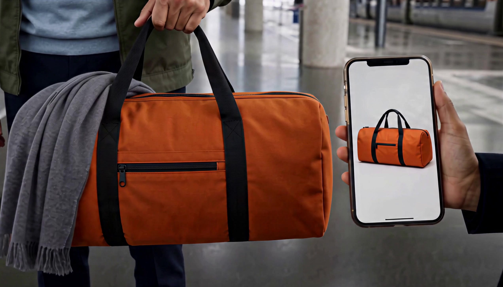
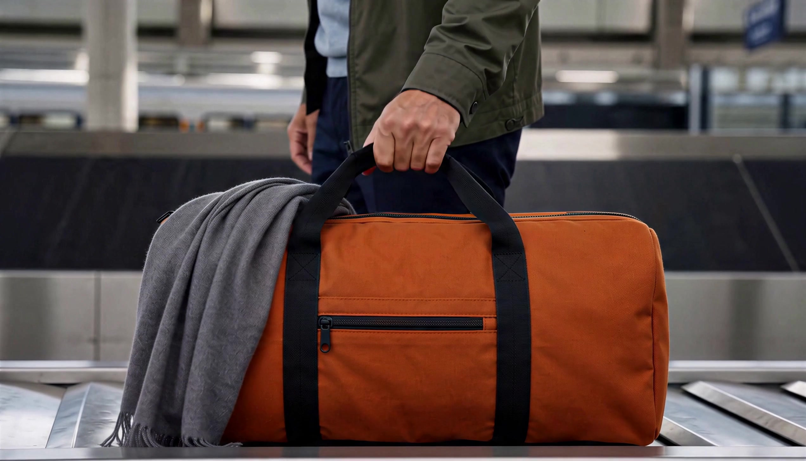
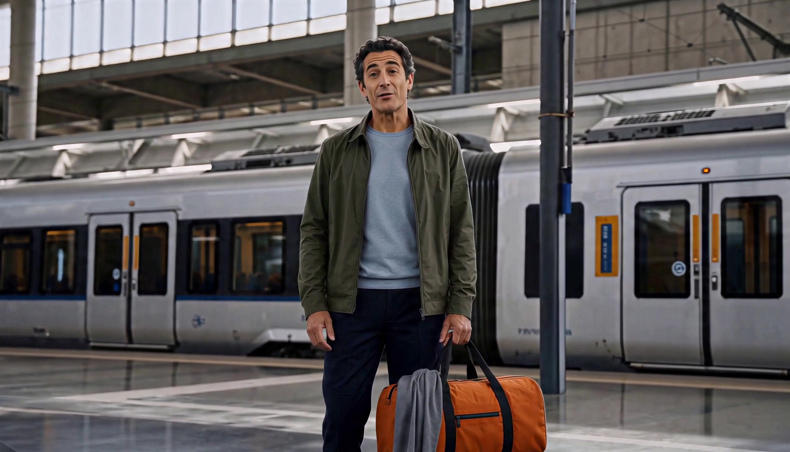

Arrakis La mise en scène
Noir chaud, lumière, profondeur, traits précis. Le sujet principal porte le spectacle.
Partir des sites que tu aimes, puis faire travailler nos vraies créations dans chaque section.
Une sélection et des intentions de mouvement à choisir ensemble, avant la prochaine maquette.
Mon choix à explorer : un grand cadre cinéma, une publicité de sneaker en construction, des démonstrations précises.
100 candidats au premier repérage + recherche chaussures
12 films présélectionnés · 11 Camgraph Admin
01 / Le langage visuel
Les captures viennent des sites réels. Cliquer pour les agrandir ; ouvrir le site pour voir le mouvement en continu.
Noir chaud, lumière, profondeur, traits précis. Le sujet principal porte le spectacle.
Choisir une tâche, voir ce qui se passe, comprendre le résultat. La référence pour Connect.
Des créations de tailles différentes, de la lumière, une présence graphique. À traduire avec nos films.
Des surfaces olive et ivoire proches de l’app. Un noir chaud pour les séquences cinéma. Le bronze pour guider l’action. Les couleurs fortes viennent des créations.
02 / La matière MaxVideoAI
Cliquer sur un film pour voir l’original, son emplacement proposé et les réserves de sélection.
Nouvelle piste produit : les sneakers du 21 juin. Trois films d’assemblage retrouvés. La version Kling Omni devient le candidat prioritaire pour le produit ; Happy Horse et Seedance offrent deux variantes. La bouilloire passe en réserve calme.
Chargement de la sélection…
Les douze originaux ont été ouverts en lecture et examinés à différents états. Cette passe repère les directions intéressantes ; elle ne remplace pas une validation image par image et audio avant publication.
Le bus n’est disponible ici qu’en 854 × 480 : réserve narrative, pas grand hero final. Le film « atomiseur » a été écarté de la sélection produit, car l’objet obtenu ressemble à un pichet. Les montres et la série de présentateur ne deviennent pas l’identité de la homepage.
Le dossier YouTube apporte un Short explicatif vertical présenté ci-dessous. La démonstration web avec la montre, également retrouvée, est écartée : Website Move sera entièrement recréé. Le choix d’un plan vertical de fond et la représentation du parcours assistant restent à travailler. Les vidéos privées sont consultées localement avec ton autorisation ; leur visibilité sur le site n’a pas été modifiée.
03 / La démonstration signature
Pour Connect, la profondeur doit relier des choses réelles : deux images fournies au modèle, puis leur résultat.
Retrouvé dans YouTube · C08 final V2
Le Short anglais de 22 secondes montre les références, l’action et le dialogue. Les plans séparés, le montage de 67 secondes et les versions sans incrustations existent aussi.
Pour le site, reprendre le geste et la transformation. Garder le présentateur pour une démonstration que l’on choisit de regarder.
Voir la version sans sous-titres ↗


Connect · concept conservé, démonstration à refaire
Garder l’idée : partir d’un site et donner vie à son produit grâce à la vidéo. La démonstration avec la montre est écartée.
Une nouvelle réalisation complète. Repenser aussi le mécanisme de démonstration. Un effet visuel pertinent peut guider une nouvelle composition, un autre produit et son univers, puis la séquence vidéo et son intégration web.
Le produit, le storyboard, les visuels et le mouvement seront proposés ensemble, avec les états desktop et mobile. Le déroulé avant/après et le cadre de navigateur ne sont pas imposés : seule compte la compréhension de ce que la vidéo apporte au site. L’ancienne réalisation ne sert ni de maquette cible ni d’image d’attente. Le nouveau sujet reste à choisir ; aucune génération n’est lancée à ce stade.
Référence de mouvement
Retenir la progression en profondeur. Nos images et notre résultat remplaceraient les couches abstraites.
Storyboard proposé · à fabriquer
Une composition complète immédiatement visible : référence produit, contexte et film d’arrivée.
Les images se détachent légèrement, s’alignent sur une même perspective et rejoignent le plan proposé.
Le choix du modèle et l’approbation du prix sont lisibles. La démonstration n’envoie aucune génération.
La vidéo devient le plan principal ; les références restent accessibles. Sortie directe vers Connect ou les exemples.
Le lien entre ces deux références et cette vidéo est vérifié dans les données de génération. La conversation, le plan et l’approbation décrits ci-dessus sont la proposition de mise en scène ; ce n’est pas une capture d’un parcours assistant déjà enregistré.
04 / Compare fait aussi partie de la refonte
Concevoir ensemble le module de l’accueil et les pages Compare refondues. Leur présentation, leur hiérarchie et leurs interactions partagent la même direction.
Structure cible · design à concevoir
Une synthèse visuelle : les deux modèles, quelques différences utiles et une entrée vers la comparaison détaillée. Les exemples et les données guident la lecture.
La même présentation se développe : résultats, critères, méthode, capacités, prix et limites. On repense aussi le contenu, les regroupements et la navigation de ces pages.
Mêmes logos, repères, typographie et logique de lecture. La homepage donne un aperçu du futur comparatif ; elle n’intègre pas une capture de l’ancien.
Mouvement proposé · à éprouver
Les identités prennent leur place dans la nouvelle composition ; les noms et actions restent lisibles.
Révéler les critères ou les exemples pertinents au fil de la lecture. Les valeurs restent exactes ; le mouvement explique la comparaison.
Le détail s’ouvre dans la future page Compare, conçue avec ce module. Sur mobile, les deux modèles restent faciles à confronter.
Périmètre confirmé
Toutes les familles de pages sont concernées. Accueil, modèles, comparatifs, exemples, outils et tarifs recevront la refonte. Les pages pilotes servent à construire une direction réutilisable, puis à la décliner.
L’ancien scoreboard sert à auditer les informations et les acquis SEO/GEO. Son apparence, ses 11 critères et leur ordre ne sont pas un cahier des charges à recopier. Les changements de fond doivent être justifiés ; aucune note ne sera inventée pour l’animation.
Avant le prochain mockup : dessiner côte à côte le module d’accueil et un extrait de la future page Compare, desktop et mobile. Les juger ensemble. La capture actuelle est retirée de cette projection ; elle reste uniquement une pièce d’audit dans le dossier.
05 / La finition fait partie du concept
La direction sera jugée sur le vrai mobile, les interactions et la lecture de la page entière.
Promesse et actions, puis poster. Une sélection tactile remplace les compositions qui débordent. Les deux côtés de Compare restent visibles ensemble.
Un cadrage qui s’ouvre, des références qui rejoignent un plan, des critères qui se révèlent. Sur petit écran : moins de profondeur, même histoire.
Rayons, alignements, ombres et séparations partagés. Menu ouvert, modal vidéo, focus clavier et états d’attente font partie de la prochaine revue.
Géométrie fixe, médias sous la ligne de flottaison à la demande, arrêt hors écran. La scène reste complète avec mouvement réduit.
PAYG, Compare, exemples, modèles, références et Connect structurent la page. Anglais master, puis FR et ES LATAM ; continuité des intentions et des routes.
GSC pour la continuité, GA4 pour les accès et premières créations, Clarity pour les hésitations. Conserver consentement et Zoho dans la recette.
Le prochain choix utile
Ouverture cinéma + produit · Références / Connect · Compare. Ensuite : une composition anglaise desktop et mobile, puis un prototype de mouvement sur la section retenue.
Les effets détaillés ici sont des intentions. Cette revue ne revendique ni gain de conversion, ni résultat Core Web Vitals, ni validation de production.
 Claude
Claude ChatGPT
ChatGPT